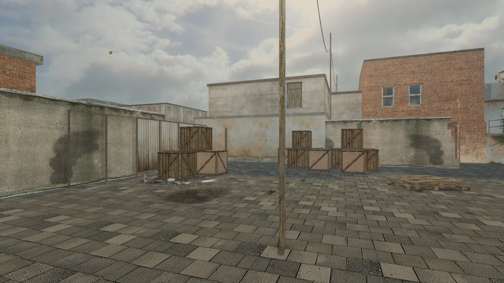
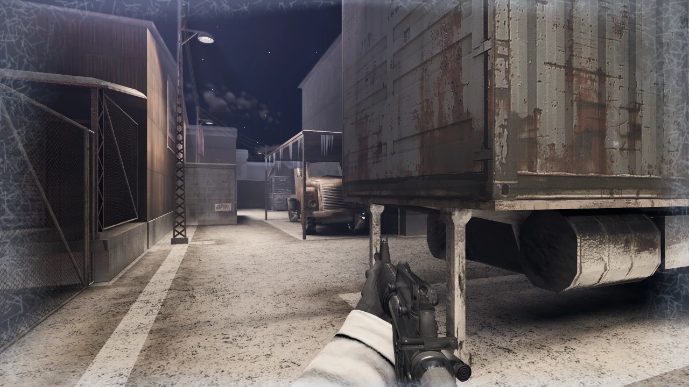

The Platinum Engine
A living sky, real-time sunlight, nights that are truly dark, glass that breaks where you shoot it, ray tracing, a rebuilt graphics menu, smarter netcode, parties and much more. Update 0.41.0 brings everything we planned for 0.40.1, 0.41 and 0.42 in one release. This is the full story.
A week ago we wrote that 0.40.0 was a milestone, not a finish line. We meant it. While 0.40.0 was in final testing, three more updates were already taking shape behind it: a small 0.40.1 with fixes, a 0.41 built around feel, sound and online play, and a 0.42 that would take the second big step in turning the engine underneath TrueCombat: Platinum into something new.

We had a choice. Ship them one after another over the coming weeks, or hold them back and release them together. We chose the second. Many of the new graphics features lean on each other: the sky drives the sunlight, the sunlight drives the shadows, the shadows and the weather drive the water, and the darkness at night depends on all of them. Releasing them in pieces would have meant shipping half a picture. So 0.41.0 is one update with everything in it.
It is the largest update we have ever made. This post is long because there is a lot to tell, and because we want you to know what is coming before you play it.
Update 0.41.0 is in final testing. Everything described here is in the release. Every new visual effect is on by default for everyone, Ranked included, and nearly every one has its own switch in the new graphics menu.
The Platinum Engine
TrueCombat: Platinum runs on an engine that began life as ET: Legacy, the open-source continuation of Wolfenstein: Enemy Territory. It is a remarkable foundation: fast, stable and built for exactly the kind of tight, competitive infantry combat this game is about. It was also designed for the hardware of twenty years ago.
Rather than throw that away and start again, we decided to upgrade it step by step, keeping what makes it feel right and replacing what holds it back. We call the result the Platinum Engine. The first phase laid the groundwork inside the DirectX 12 renderer. 0.41.0 completes the second phase, and it is the one you will see.
You will notice it the moment the game starts: a short new intro card for the Platinum Engine now plays before the Team Terminus logo. It quietly says what we think is the honest description of this engine, an extensively re-engineered evolution of ET: Legacy. If you would rather skip it, one setting removes it.
A modern renderer core
Most of the work in this phase sits where nobody sees it. The DirectX 12 renderer now builds and caches its shader pipelines ahead of time, so the small stutters you could feel the first time an effect appeared on a map are gone after the first load. A render graph plans each frame as a whole, so the GPU spends less time waiting on itself. Heavy work such as lighting and particle simulation runs on the GPU's compute queue alongside drawing instead of after it.
The renderer moved to Shader Model 6.6 and gained support for mesh shaders, variable rate shading and DirectStorage. In plain terms: dense geometry like grass is generated on the graphics card instead of being fed to it piece by piece, parts of the screen that do not need full detail, such as fast motion or deep shadow, cost less to draw, and textures stream from disk straight to the GPU. Virtual texturing builds on that, so the large new textures in 0.41.0 only occupy video memory where you can actually see them.
None of this changes how the game plays. It is what made everything else in this post possible.
A sky that moves
Since the first release, every map in Platinum has had a painted sky: a picture of clouds that never changed. On DirectX 12 it is now a real sky.
Clouds are volumetric. They have depth and body, the sun lights them from the right side, they drift with the wind and they slowly grow, thin out and change shape over a round. They cast moving shadows across the map, and the light on the ground follows them: a street that was in full sun a minute ago dims as a cloud passes over, then brightens again. Where the clouds break, shafts of sunlight reach down through the gaps. Above it all sits a physically based atmosphere, so a hazy afternoon has the right colour, the horizon has real depth and high, thin cirrus streaks the sky on a clear day.
Weather you can see coming
Random weather arrived in 0.39.4. In 0.41.0 the sky finally shows it. Rain falls from the clouds that carry it, so you can watch a shower move across the map and leave the ground wet behind it. Wet ground dries again after the rain has passed. Snow settles. Thunderstorms build up as tall cells on the horizon before they arrive, and lightning lights the whole map for a split second, shadows included. After a storm, with the sun behind you, you may catch a rainbow.
Weather can also change during a round. A weather front can roll in, a clear morning can cloud over, and a storm can blow out again. The server decides when and how, so every player on the server sees exactly the same sky at exactly the same moment. Wind is shared too: the same gusts that push the clouds bend the grass, carry the rain, move the smoke and swing the trees.
The horizon of every official map has been redrawn in higher resolution, so the edge of the world holds up next to the new sky.


0.40.0 0.41.0Sunlight in real time
The sunlight on the classic maps was baked: calculated once, years ago, and painted into the world as a texture. It looked good, but it was frozen. Players, weapons and anything that moved received only a rough approximation of it, and nothing could ever change.
In 0.41.0 the sun is calculated in real time on DirectX 12. We kept the baked bounce light, which is what gives the maps their character, and replaced the direct sunlight with a live version for every pixel on screen. Shadows have soft edges that grow softer with distance from whatever casts them, the way real shadows do. Players cast proper shadows across walls and floors and receive them correctly in return. Your own weapon now sits in the same light as the world around it: step into the shade of a building and the shadow falls across your rifle.
Real-time sunlight also means the light can change. Passing clouds dim it, lightning flashes cast their own shadows, and smoke between you and the sun casts a shadow of its own. Shadows reach much further than before, so a long street keeps its shadows all the way to the end.

Light that fills a room
Sunlight is only half the story. The other half is how light moves once it arrives.
Global illumination. Light now bounces in real time. A sunlit wall throws warm light into the room next to it, a red door colours the floor in front of it and a flash from a grenade fills a corridor instead of lighting one spot. A grid of light probes covers each map and updates as the light changes, so a passing cloud or a lamp being shot out changes the rooms around it too.
Ambient occlusion. Corners, creases and the space where a wall meets the floor now darken the way they do in reality, with a modern technique that reads the shape of the scene far more accurately than the old one. Soldiers ground properly where they stand.
Volumetric light and fog. The air itself catches light now. Sunbeams through a window, the cone of a street lamp in the rain and the glow of a fire through smoke are all real volumes of light rather than flat sprites. Distance has weight: long sightlines fade into haze, heat shimmers above hot ground on a summer afternoon, and heavy rain swallows a figure at the far end of a street.
Lamps with shadows. Every lamp in every official map has been placed, measured and given a real light with real shadows. Up to eight lamps near you cast shadows at the same time on Ultra, four on High, and they keep the cost low by remembering what does not move.
Ultra RT
For graphics cards with hardware ray tracing, 0.41.0 adds a new top preset: Ultra RT.
Ray tracing follows real light paths through the scene instead of estimating them from what is on screen. Reflections show what is really there, including things outside your view: a player coming around the corner behind you appears in a shop window before they appear on your screen. Shadows from the sun and from lamps are traced too, which makes them pin-sharp where objects touch the ground and naturally soft further away. Global illumination uses traced rays to find where light bounces, which makes interiors noticeably more accurate. A dedicated denoiser keeps the result clean and stable in motion.
Ultra RT is a choice, not a requirement. Every map, every mode and every effect described in this post works without it, and the rest of the presets were built first.
Surfaces, water and rain
Every surface in the game now knows what it is made of. Brick, concrete, wood, metal, glass, tile, asphalt, plaster and earth all have their own physically based material, which decides how rough they are, how they catch the light and what happens when they get wet.
Reflections. Screen-space reflections are now part of every shiny surface instead of just puddles. Glass, polished floors, wet stone and metal reflect the world around them on High and Ultra, with ray-traced reflections on Ultra RT.
Rain that soaks in. When it rains, surfaces darken and start to shine. Porous stone soaks up water, smooth tiles bead it, and puddles form where the ground actually dips, mapped for every official map from the level geometry. Raindrops ripple in the puddles and run down walls. Under a roof or a deep overhang, the ground stays dry, with a soft edge where blown rain reaches just under the eaves. When the rain stops, everything dries out again over the following minutes.
Water. Northport's harbour and Lockgate's canal are real water now: moving, reflecting, refracting the ground beneath them and reacting when something hits them.
Depth in every brick. Cobblestones, brick walls and rough stone have real depth now. Parallax and tessellation push the surface out of the flat texture, so a brick wall seen along its length has edges you can actually see.
Sharper textures. 165 textures across the official maps have been rebuilt at 2048 pixels, including 48 that were never remastered before, and an optional 4K pack sharpens the 40 largest ground and wall textures even further for graphics cards with memory to spare.
When night falls
This is the feature we are most excited about, and the one we spent the longest getting right.
Time of day is now part of every round, the same way weather is. A round can take place in full daylight, at golden hour, in the cold blue light before dawn or at night. The server rolls it, everyone on the server plays in the same light, and it applies to every mode, Ranked included.
And when it is night, it is dark. Not a blue filter over a daytime map: real darkness, where the only light is the light that is actually there. Moonlight, the glow of the sky, street lamps, lit windows, fires and whatever you bring with you.
We know what you are thinking, because it was our first question too: will it be pitch black? Rarely, and only where it would be in reality. An interior with no windows and the lights out, at night, is dark. A street under lamps is not. Most of the time you will be able to see, and the fun is in what you do about the places you cannot.
Light as a weapon
Darkness only works if light becomes part of the fight, so we gave both teams the tools.
- Lamps and power. Lamps can be shot out, and they stay out. Many buildings have a breaker: throw it and the lights inside go off, loudly enough for everyone nearby to hear. Emergency lights stay on.
- Weapon light. A light under the barrel, free to carry and quick to switch. It lights up whatever you point it at and dazzles the player you shine it into. It also tells everyone exactly where you are.
- Flares. Hand flares burn red and smoky for half a minute. One parachute flare per team per round lights up a whole section of the map from above.
- Night vision. Night vision takes an equipment slot and is limited per team. It turns the dark green and visible, but it has a narrow field of view and little depth, takes a second to flip down and washes out completely when a flare, a lamp, a flashbang or an enemy's weapon light hits it.
- Muzzle flashes. Every shot lights up the world around the shooter for a moment. At night, a firefight can be seen from across the map.
Your eyes adapt, too. Step out of a lit room into the night and it takes a few seconds before you can see properly again. Step from the dark into the light and you are briefly dazzled.
Balance first
When we first showed all of this internally, the first reaction was not "that looks great" but "that needs balance". So balance came first. Every one of these tools has a cost and a counter. Each was tuned with a clear goal: a round at night should be as winnable for both sides as a round in daylight, and there should be several good ways to play it. Bots follow the same rules: they see by the same light you do, they use the same tools and they fall for the same tricks.

Built to break
Glass
Glass in Platinum used to be either decoration or a single breakable panel that disappeared in one piece. In 0.41.0, every real pane of glass in every official map is a pane you can shoot through.
A bullet leaves a hole the size of a bullet, surrounded by cracks that spread in rings and lines from where it hit. Keep shooting and pieces cut loose and fall. A grenade leaves a jagged edge in the frame. Make a hole big enough and you can climb through it, and sprinting or vaulting into a weakened pane breaks it open. The server decides every break, so every player sees exactly the same holes in exactly the same places, and a player who joins mid-round sees the window as it is. The glass stays broken until the map restarts.
Walls, debris and the aftermath
Bullet holes and scorch marks project properly onto the shape of the surface they hit and last for the whole round, so a fight leaves a record on the walls. Repeated fire into the same spot chips it away in stages. Crates and boards break into pieces that match what they are made of: wooden boards split into planks and splinters along the grain, metal crates into bent sheets. The pieces fall the same way on every player's screen, tumble down stairs and get kicked aside by passing feet, though they never block your path.
After an explosion indoors, plaster flakes off the ceiling, dust hangs in the air for half a minute and soot marks the walls. The maps themselves have aged as well: rain has streaked the walls, grime collects where walls meet the ground and water stains run down beneath window sills.
Weapons that wear
Every first-person weapon now has edge wear where hands and holsters would have rubbed it, grime in its recesses and a fine layer of dust, finished differently for each family of guns. Fire it and carbon builds up around the muzzle and the ejection port, round by round. Spent brass now has proper physics and real metal: it bounces, rolls down stairs, catches the light of muzzle flashes and stays on the floor for the rest of the round, along with the empty magazines from your reloads. Your weapon catches the light of its own muzzle flash, too.
Smoke, shock and wear
Smoke grenades are now real volumes of smoke, simulated rather than drawn as a handful of sprites. They fill the space they are thrown into, roll around corners, drift with the wind and block sight completely. Muzzle flashes and fire light them up from the inside. Smoke looks the same for every player on every setting.
Suppression has more weight. Rounds cracking past your head blur the edges of your vision and narrow your view for a moment. A nearby blast washes out the screen, throws dust into the air around you and leaves your ears ringing.
Uniforms tell the story of a round. Soldiers pick up dust when they go prone, get soaked in the rain, collect mud in wet ground and carry visible wounds after they are hit. By the end of a hard round, you can see who has been in the fight.
Particles and physics
In 0.40.0 we introduced a new particle system. In 0.41.0 it moved to the graphics card, and then we made it massive.
On DirectX 12, particles are now simulated on the GPU, which lets the game run hundreds of thousands of them at once. Explosions throw up what they hit: clods of earth and a column of brown dust on grass, grit and grey dust on asphalt, splinters from wood. Fragments flash briefly as they fly. Leaves and litter are carried by the same wind as everything else. Particles collide with the world, cast soft shadows, are lit by the new lights and fog, and blend smoothly from frame to frame.
Many small details came with it:
- Bullet impacts differ by material, and some effects linger: dust hangs, embers glow, snow puffs drift.
- Fire is new and burns with real heat haze above it.
- Bullets and blasts in water throw up spray and mist.
- In the rain, running on hard ground splashes droplets around your boots. Sprinting through snow kicks up clumps.
- A moment after a bullet hits a stone wall, a thin trickle of grit runs out of the hole.
- Dust motes drift in sunlit rooms, and leaves and paper skate across open ground.
- Tarps, awnings, flags and nets in the world are real cloth that moves with the wind and reacts to blasts. Cloth on soldiers moves too: sleeves, trouser legs and loose straps sway as they run.
Blast dust is heavier than before and casts a deeper shadow. It looks the way a real explosion looks, even when that means it briefly hides someone.
Grass, trees and soldiers
Grass on DirectX 12 is real geometry now, generated on the graphics card in dense, natural patches that bend as you walk through them and spring back after. Flowers and weeds break up open ground.
Trees are new on Village, with thirteen broadleaf trees, and on Snow, with bare winter trees. They sway in the shared wind, let sunlight glow through their leaves and shake when an explosion goes off nearby, along with the grass and bushes around them.
Draw distance is further, and the transition between detail levels is smoother, so trees, grass and props no longer pop into view as you move.
Soldiers have new skin and fabric shading, with each part of a uniform shaded as what it is: cloth, leather, rubber, steel or polymer. Animation blending is smoother, and feet now plant properly on slopes and stairs instead of floating above them or sinking in.
Camera and photo mode
The camera behaves more like a real lens now. Aiming down sights brings a subtle depth of field to the world beyond your sights. Motion blur, tuned to a real camera shutter, smooths fast turns. Bright lights flare in the lens and dirt on the glass catches the sun. Each of these has its own switch.
For screenshots, there is now a photo mode. In replays, on your own server or as a full spectator, pause the action, move the camera freely and adjust the lens, focus, aperture and motion blur, then capture. Photo mode is not available during a live match on a server with other players, so it can never be used as an advantage.
Image quality and HDR
The final image now goes through a new pipeline. The scene is rendered in true high dynamic range, exposure works the way a camera does, bloom comes from the actual brightness of a light, and a new filmic tone curve turns it all into a picture that holds detail in both bright skies and dark interiors. On an HDR monitor, the game now outputs real HDR10, with highlights that are genuinely brighter than the rest of the screen.
Anti-aliasing and upscaling. A new temporal anti-aliasing replaces multisampling on High: sharper, steadier and cheaper. NVIDIA DLSS now offers its full set of upscaling modes, and AMD FSR 3.1 is available on every modern graphics card. Dynamic resolution can hold your frame rate steady by lowering resolution slightly during the heaviest moments.
Frame generation and latency. DLSS and FSR frame generation are both supported, together with NVIDIA Reflex and AMD Anti-Lag 2 to keep input latency low.
A new graphics menu
With this many new options, the old graphics menu would have collapsed under the weight. So we rebuilt it.
The new Options > Graphics is organised by what a setting does, not where it lives in the engine. Every setting shows a live preview of what it changes, and a meter shows how much video memory and performance your choices cost before you apply them. Presets now run from Low to Ultra RT.
Auto-detect looks at your hardware and picks the best settings for it. If your PC falls short of a smooth frame rate, it lowers resolution and quality steps first and only switches off an effect when it has to, and it tells you which.
Benchmark. A built-in benchmark runs a fixed route through Village, in a quick 20-second version or a full 60-second one, and keeps a history of your results, so you can see exactly what a change did.
OpenGL and the Low preset keep the look you know from 0.40.0, so older machines are not left behind.
Sound that travels
The audio engine took two big steps in this update.
First, sound now travels through the map the way it does through real buildings. It finds its way through doorways and around corners instead of passing through walls, so a shot two rooms away sounds like it comes from the doorway it reaches you through. Each map is measured the first time you load it and remembered afterwards, community maps included. Reverb now has direction: in a hall, the echo comes back from the far wall.
Second, on top of that, there is ray-traced audio. The game traces sound through the actual geometry of the map, so the size, shape and materials of a room decide how it sounds. Early reflections bounce off nearby walls, a tiled corridor rings while a room full of crates stays dull, and opening a door, breaking a window or blowing a hole in a wall changes how the space around it sounds the moment it happens. It runs on the CPU or, on DirectX 12, on the graphics card, and has its own quality setting.
Realism has its limits where sound is concerned, and we drew one: the new acoustics never make a sound more than 10 dB quieter than it would be without them, so the sounds you rely on stay audible.
Every shot where it should be
Hit registration is the part of a shooter you should never have to think about. We spent this update making sure you do not.
Rewind accuracy. When you fire, the server rewinds the other players to where they were on your screen. On an unstable connection, the engine's timing could drift so that players were drawn slightly ahead of where the server rewound them. We now measure exactly when each player was drawn on your screen and send that precisely. On a connection with Wi-Fi-like jitter, the worst-case difference between where you saw a player and where the server checked your shot dropped to about a third.
Hitboxes that follow the body. Hitboxes now follow the pose of the character you can see: leaning, crouching, sprinting and the moment of changing stance. In our measurements, the head hitbox now sits about three times closer to the head you see on screen.
Smoother players. Remote players are now played out from a short, steady buffer that adapts to your connection, so they no longer freeze for a frame and then jump. On an unstable connection, the share of frames where other players stuttered fell from about one in five to none, at the cost of about 20 milliseconds of extra delay.
Fewer corrections, better rejoins. Your own movement is corrected by the server far less often when packets are lost, and rejoining a server over a poor connection now succeeds almost every time instead of getting stuck.
The free server kit for community servers now runs at 128 ticks per second by default, the same as our official servers.
Play together
Parties. Form a party with your friends in the launcher and you stay together: Quick Play finds a server with room for all of you and puts you on the same team, and party members can follow the leader into a server with one key.
Find the right server. Servers now show their region, and the in-game server browser has your favourites, recent servers and friends, just like the launcher. Quick Join in the main menu now takes you straight into a good game.
Smarter bots
Bots fight more like a team. They take cover and crouch behind it to reload or after being hit, instead of standing in the open. Terrorist bots stage before they attack a bomb site and then go in together. Defending bots hold sensible positions while a teammate defuses, covering the ways in. We tuned all of this to keep rounds moving: rounds against bots last only a little longer than before, and bots die in the open a lot less often.
Interface
- Scoreboard. Hold TAB and your aim key to bring up a cursor. Click a player to open their player card, with mute and report.
- Kill feed. Headshots, wallbangs and multi-kills are marked.
- HUD editor. Move and resize every part of the HUD.
- Loading screens show new artwork for every official map, captured in the engine on Ultra, along with the map's tactical overview, the objectives and real loading progress.
- Deployment shows your weapon and your soldier in 3D, and lets you finish your look: pick a vest in olive, tan, grey or black, and a boonie, baseball cap, patrol cap, watch cap or no headgear at all.
- Menus move with smoother animation and sound, every icon in the game comes from one consistent set, and the whole interface is sharp in 4K and laid out correctly on ultrawide monitors.
On our official servers, the loading screen and scoreboard now carry a Team Terminus official server signature. Community servers are not affected.
Lockgate, upgraded
Lockgate, our newest map, received a full visual pass: a skyline beyond the canal, hundreds of new details across the walls and floors, new lamps, a crane, trusses in the pump hall, pipes and hazard paint, large A and B markings on the bomb sites and puddles at the locks. It has a soundscape of its own now, too. The layout and collision are exactly the same, so everything you have learned about the map still holds.
Realism first
During development we made a decision that shaped almost everything in this update. In many games, visual effects are held back so that they never hide a player: grass that thins out around characters, fog that stops short, shadows that are never quite dark. We have decided not to do that.
In 0.41.0, things look the way they would look. Grass hides someone lying in it. Rain makes a distant figure hard to see. A night is dark. Smoke blocks sight. That is not always fair, and neither is the real world. It does reward the players who use it, and it applies to everyone equally, because the weather, the time of day, the smoke and the broken glass are the same for every player on the server.
What does not change: hitboxes, collision, the server's authority over every shot and everything that keeps the game fair to play. Every visual effect is on by default, everywhere, and almost every one has its own switch. Weather, time of day and smoke are the exceptions, because they are part of the round rather than a setting.
Fixes
- Settings used by Boot Camp and the benchmark no longer carry over into the games you play afterwards.
- Fixed a rare problem with the kill card on the death screen.
- The red dot sight now follows where the rifle actually points, and the dot only shows through the sight glass.
- Many smaller fixes found during testing.
We've tightened and expanded our security measures.
How we tested it
Every piece of 0.41.0 passed through our automated build and test pipeline on its own before it was combined with the rest, and the combined update is now going through our full regression on real hardware: the game and the server, DirectX 12 and OpenGL, and the launcher. The new effects are demanding, and we want them to be right on your PC before they arrive. The screenshots in this post come from that release candidate.
What is next
With 0.41.0, the second phase of the Platinum Engine is complete. There is plenty left to do, and you will hear about it here first.
As always, the patch notes on Discord will list every change when the update goes live. Thank you for reading, for playing and for every piece of feedback. See you on the front line, day or night.
Was this worth the read?
Anonymous. No account, no cookies.
Questions about this post? Ask the team on Discord.